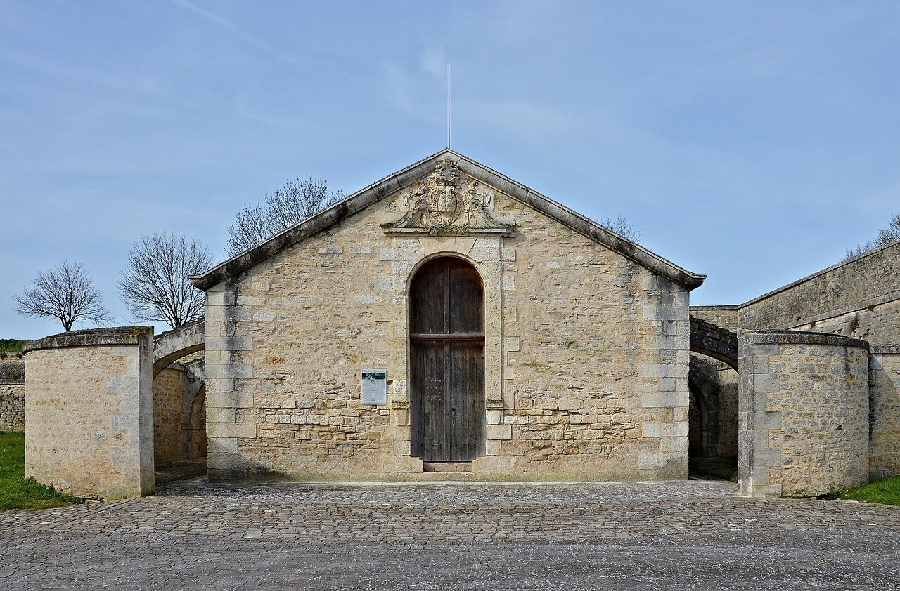

Découvrir un ancien port loin de la mer
Brouage surprend dès le premier regard : comment cette majestueuse cité fortifiée entourée de douves a-t-elle pu être, au XVIe siècle, l'un des ports de commerce du sel les plus florissants d'Europe ? Le retrait de la mer a transformé le golfe en marais. Brouage est aussi la ville natale de Samuel de Champlain, fondateur de Québec : l’église Saint-Pierre abrite des vitraux offerts par la ville de Québec, rappel émouvant de ce lien historique.
Prendre de la hauteur sur les remparts
La citadelle se découvre exclusivement à pied. Le chemin de ronde des remparts, long de plus de deux kilomètres, comporte des escaliers en pierre : il n’est donc pas accessible aux personnes à mobilité réduite ni aux poussettes. Depuis les échauguettes, le point de vue sur les étendues sauvages et les canaux est saisissant. À l’intérieur du village, les rues et les espaces de plain-pied permettent toutefois une promenade plus accessible.

Photo : Jebulon · Domaine public
Regarder les marais autrement
Autour de Brouage, les prairies humides forment un sanctuaire pour les cigognes blanches, qui nichent dans les arbres et sur les poteaux aménagés. Le printemps et le début de l’été sont les périodes idéales pour observer les adultes et, avec un peu de chance, leurs poussins. Emportez des jumelles et gardez vos distances pour ne pas troubler leur environnement.
Garder une visite à taille humaine
Associez la balade à une halte dans l'une des petites échoppes d’artisanat d'art installées dans les anciennes casernes ou la halle aux grains, avant de savourer un rafraîchissement au calme.
Avant de partir : quelques repères pratiques
Stationnement. La citadelle se visite exclusivement à pied. Garez obligatoirement votre véhicule sur l’un des parkings gratuits situés à l’extérieur des remparts, notamment près de la Porte Royale ou de la Porte d’Hiers.
Accessibilité. Le chemin de ronde comporte des escaliers en pierre et n’est pas adapté aux poussettes ni aux personnes à mobilité réduite. L’intérieur du village se parcourt de plain-pied, malgré les rues pavées.
À prévoir. Prévoyez de bonnes chaussures et un coupe-vent. Avec de jeunes enfants, restez vigilants près des garde-corps.
Pour préparer votre sortie : Marennes-Oléron — Découvrir Brouage ↗.
Rochefort Océan — Le marais de Brouage, territoire d'exception ↗